Focus: Human Anatomy
The Heart
The heart is a fist-sized double pump in the mediastinum: the right side drives the pulmonary circuit to the lungs, the left side drives the systemic circuit to the body. This deck builds its wall, chambers, valves, muscle, and the pathway of blood. Dr. Sharilyn Rennie
Download the PowerPoint · need a PDF? Download the accessible PDF from Canvas.
Part 1
The Heart and Its Wall
A muscular pump wrapped in a double sac, with a wall built in three layers.
Part 1 · Overview
The heart, an overview
- A hollow, muscular pump in the mediastinum, resting on the diaphragm and tilted to the left.
- The apex is the blunt inferior tip (down and to the left); the base is the broad superior surface where the great vessels attach.
- It drives two circuits: the pulmonary circuit (right side, to the lungs and back) and the systemic circuit (left side, to the body and back).
Part 1 · Surface anatomy
The cardiac sulci
| Sulcus | Location | Vessel it carries |
|---|---|---|
| Coronary sulcus | encircles the heart between the atria and ventricles | right coronary artery |
| Anterior interventricular sulcus | front surface, between the ventricles | anterior interventricular artery (LAD) |
| Posterior interventricular sulcus | back surface, between the ventricles | posterior interventricular artery |
Part 1 · Wall & sac
The heart wall and pericardium
- Pericardium: a double sac. The outer fibrous pericardium protects and anchors the heart; the inner serous pericardium has a parietal layer and a visceral layer with the pericardial cavity and its lubricating fluid between them.
- Heart wall, three layers: the epicardium (the visceral serous pericardium on the surface), the myocardium (the thick cardiac-muscle layer that does the pumping), and the endocardium (the smooth endothelial lining continuous with the vessels).
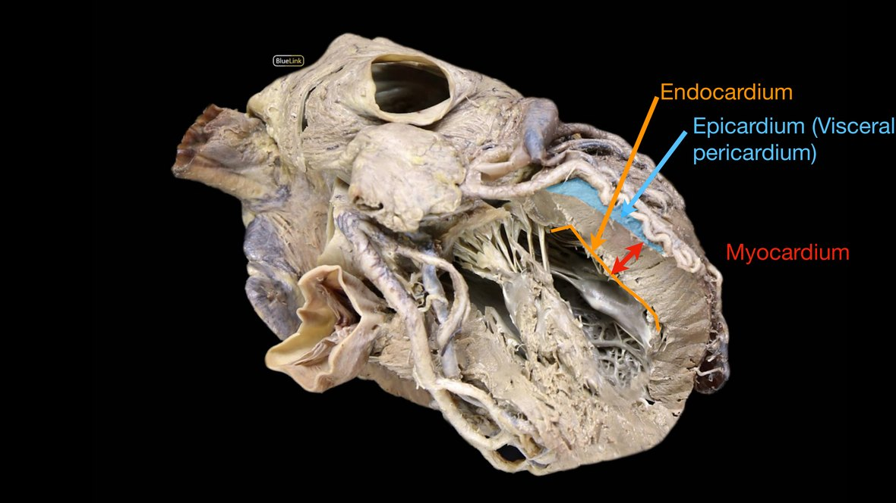
Part 1 · Clinical
Pericarditis, tamponade, and pericardiocentesis
| Problem | What is going on |
|---|---|
| Acute pericarditis | most common; often viral. Chest, left arm and shoulder pain, plus a scratchy pericardial friction rub as the inflamed layers rub. Lasts about a week; treated with anti-inflammatories (ibuprofen, aspirin). |
| Chronic pericarditis | gradual onset; causes include cancer or tuberculosis. Pericardial fluid builds up. |
| Cardiac tamponade | fluid compresses the heart, so cardiac output and venous return fall, blood pressure drops, and breathing becomes difficult. |
| Pericardiocentesis | a needle drains the excess fluid from the pericardial sac. |
Part 1 · Clinical
When the wall layers inflame: myocarditis and endocarditis
| Condition | Definition | Signs | Treatment |
|---|---|---|---|
| Myocarditis | inflammation of the myocardium (viral, rheumatic fever, radiation, chemicals) | often none; may have fever, fatigue, chest pain, irregular heartbeat | rest, low-salt diet, ECG monitoring; usually resolves in about two weeks |
| Endocarditis | inflammation of the endocardium, usually the valves; most often bacterial | fever, heart murmur, irregular or rapid heartbeat, night sweats | IV antibiotics |
Part 2
Chambers, Valves, and Muscle
Four chambers, four one-way valves, and a muscle tissue found nowhere else.
Part 2 · Chambers
The four chambers
| Chamber | Receives from | Pumps to |
|---|---|---|
| Right atrium | The body (venae cavae) and heart (coronary sinus) | Right ventricle |
| Right ventricle | Right atrium | Lungs, via the pulmonary trunk |
| Left atrium | Lungs, via the pulmonary veins | Left ventricle |
| Left ventricle | Left atrium | The body, via the aorta; its wall is the thickest |
Part 2 · Chambers
Inside the chambers: features and why they are there
| Feature | Where | Why it is there |
|---|---|---|
| Interatrial septum | wall between the two atria | separates the right and left atria |
| Fossa ovalis | oval depression in the interatrial septum | the sealed-over remnant of the fetal foramen ovale, which let blood bypass the non-working fetal lungs; it closes at birth |
| Interventricular septum | thick wall between the ventricles | separates the ventricles; its muscular bulk helps drive ejection |
| Auricle | wrinkled flap on each atrium | adds extra atrial capacity (room to fill) |
| Pectinate muscles | ridges in the atria and auricles | reinforce the thin atrial walls and let the auricle expand |
| Trabeculae carneae | muscular ridges lining the ventricles | keep the walls from sticking together by suction so the chamber empties and refills cleanly; add strength without bulk |
| Moderator band | band spanning the right ventricle | carries the right bundle branch to the anterior papillary muscle, timing its contraction |
| Papillary muscles + chordae tendineae | project from the ventricle walls to the AV-valve cusps | tense the cords to hold the AV valves shut against ventricular pressure, preventing prolapse and backflow |
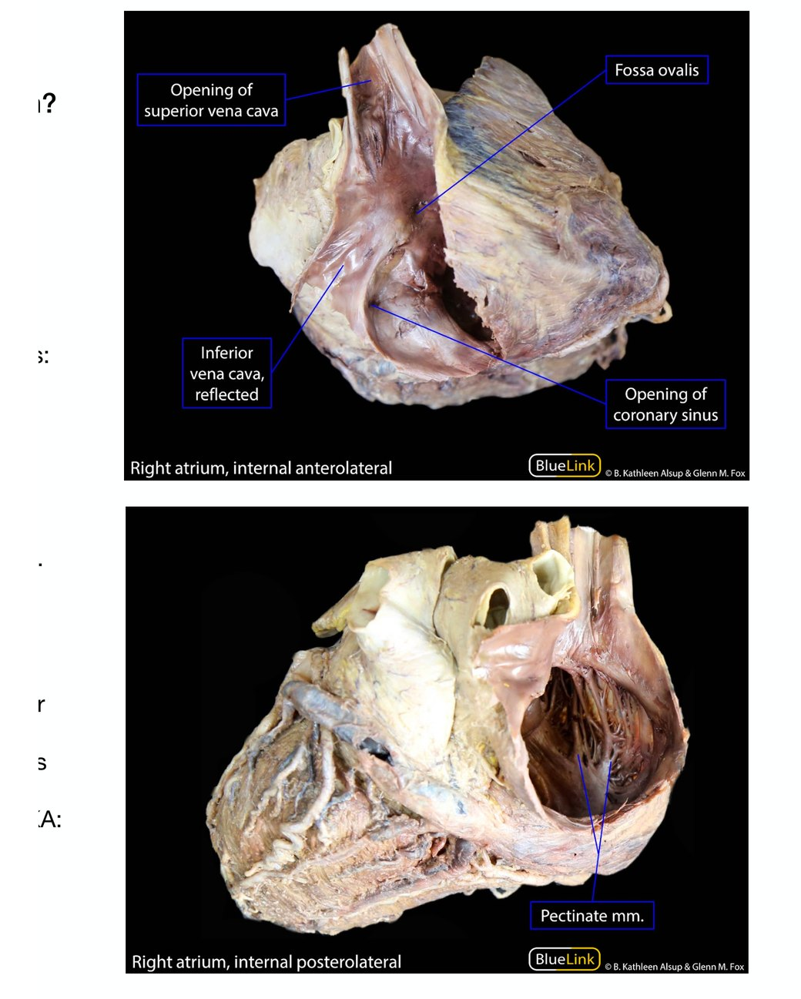
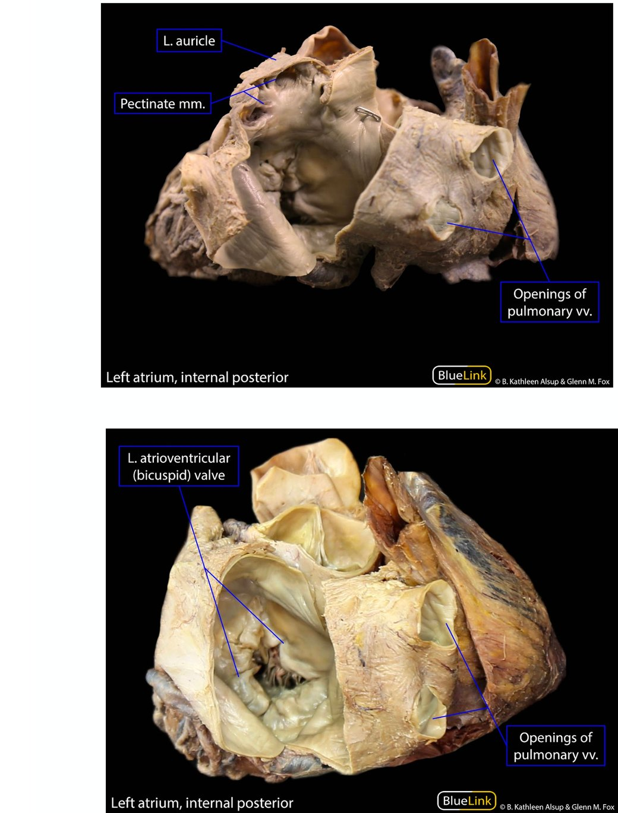
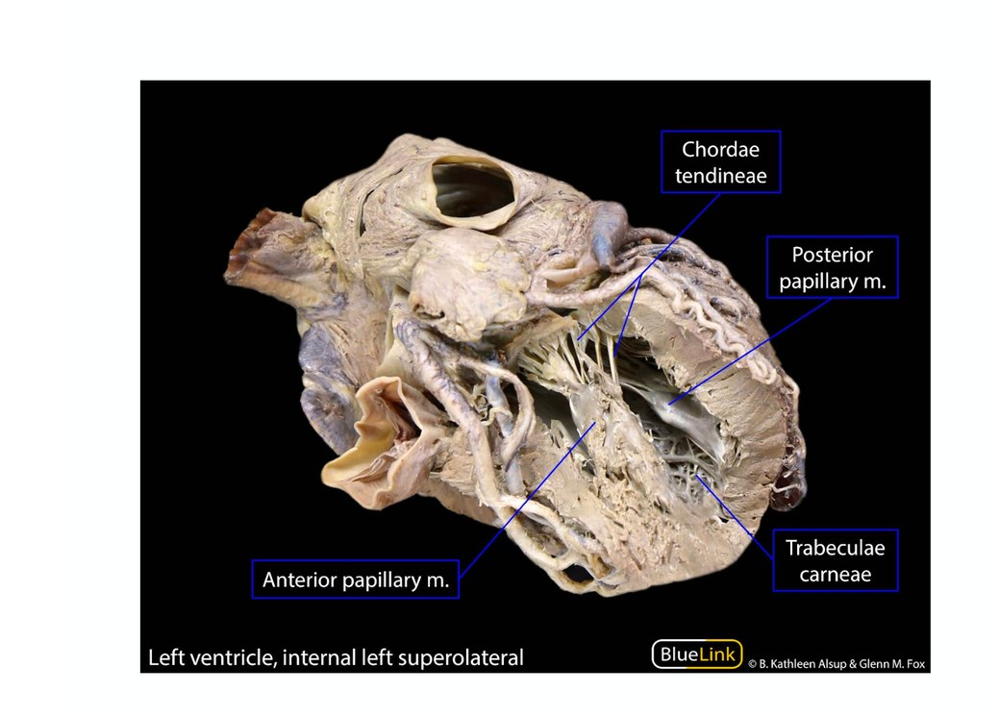
Cadaver images: University of Michigan BlueLink (B. Kathleen Alsup & Glenn M. Fox), CC BY.
Part 2 · Chambers
Wall thickness follows the workload
| Chamber | Wall and lumen | Why |
|---|---|---|
| Atria | thin walls | low-pressure receiving chambers; they just hand blood to the ventricles |
| Right ventricle | thinner wall; crescent-shaped lumen | pumps a short distance to the lungs at low pressure |
| Left ventricle | thickest wall; circular lumen | pumps to the whole body against high pressure |
Part 2 · Development
Fetal structures and their adult remnants
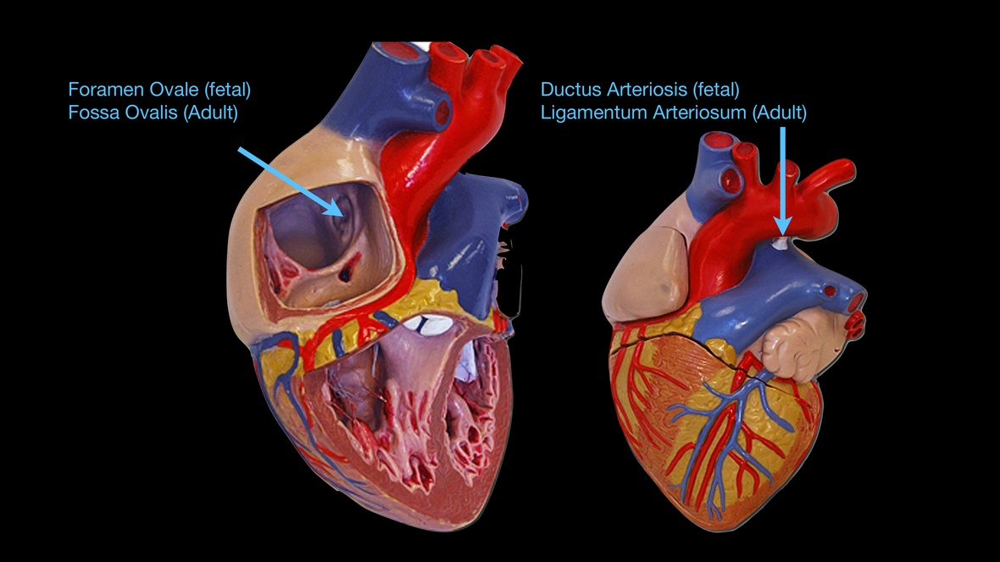
| Fetal structure | Job before birth | Adult remnant |
|---|---|---|
| Foramen ovale | opening in the interatrial septum; sends blood from the right atrium to the left, skipping the lungs | Fossa ovalis |
| Ductus arteriosus | vessel shunting blood from the pulmonary trunk to the aorta | Ligamentum arteriosum |
Part 2 · Development
Congenital heart defects
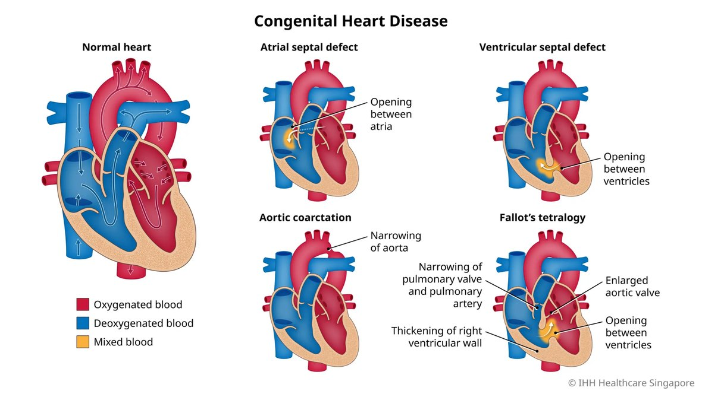
| Defect | What is wrong |
|---|---|
| Atrial septal defect (ASD) | a hole in the interatrial septum, often a foramen ovale that never sealed |
| Ventricular septal defect (VSD) | a hole in the interventricular septum |
| Tetralogy of Fallot | four defects together: a VSD, pulmonary stenosis, an overriding aorta, and right ventricular hypertrophy |
| Transposition of the great vessels | the aorta leaves the right ventricle and the pulmonary trunk leaves the left ventricle |
Part 2 · Valves
The four valves
| Valve | Type | Between |
|---|---|---|
| Tricuspid | AV, 3 cusps | Right atrium and right ventricle |
| Mitral (bicuspid) | AV, 2 cusps | Left atrium and left ventricle |
| Pulmonary | Semilunar | Right ventricle and pulmonary trunk |
| Aortic | Semilunar | Left ventricle and aorta |
Chordae tendineae tie the AV-valve cusps to papillary muscles, which hold the valves shut against ventricular pressure.
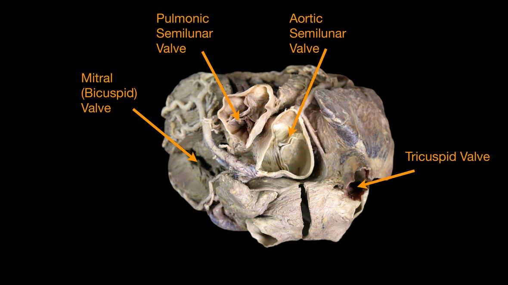
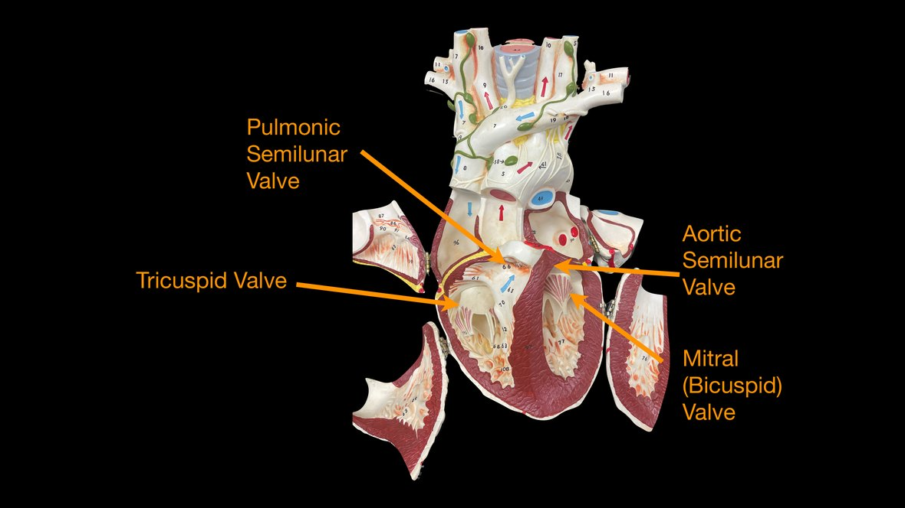
Part 2 · Valves
How the valves work
| Valve set | Opens when | Closes when |
|---|---|---|
| AV valves (tricuspid, mitral) | the atria hold more pressure than the relaxed ventricles, so blood drops into the ventricles | the ventricles contract; rising pressure pushes the cusps shut, and the papillary muscles plus chordae tendineae stop them flipping back into the atria |
| Semilunar valves (pulmonary, aortic) | ventricular pressure rises above the artery and blood is ejected | the ventricles relax; back-pressure fills the cup-shaped cusps and snaps them shut |
Part 2 · Valves
The fibrous skeleton of the heart
| Function | Why it matters |
|---|---|
| Anchors the four valves | gives each valve a firm foundation |
| Prevents the valve openings from stretching | so they stay competent as blood passes |
| Anchors the cardiac muscle bundles | a point of insertion for the myocardium |
| Electrically insulates atria from ventricles | the impulse can only cross through the AV bundle, which times the beat |
Part 2 · Conduction
Identifying the conduction system
| Structure | Where to find it | What it does |
|---|---|---|
| SA node (pacemaker) | right atrial wall, near the opening of the superior vena cava | starts each heartbeat |
| AV node | interatrial septum, near the opening of the coronary sinus | the gateway from the atria to the ventricles |
| AV bundle (bundle of His) | pierces the fibrous skeleton into the interventricular septum | the only electrical bridge across the insulating skeleton |
| Right and left bundle branches | run down the interventricular septum toward the apex | carry the impulse to each ventricle |
| Purkinje fibers | spread up through the ventricular walls from the apex | hand the impulse to the ventricular muscle |
| Moderator band | crosses the right ventricle to the anterior papillary muscle | carries the right bundle branch (the feature from the chambers slide) |
Part 2 · Valves
Valve disorders
| Disorder | What happens |
|---|---|
| Stenosis | a valve opening narrows and restricts flow (for example mitral stenosis, aortic stenosis) |
| Insufficiency (incompetence) | a valve fails to close fully, so blood leaks backward |
| Mitral valve prolapse | a cusp balloons into the left atrium during contraction; common (about 30 percent), usually not serious |
| Rheumatic fever | a post-strep immune reaction that can scar the valves |
| Valve replacement | human, pig, or mechanical valve; the aortic valve is replaced most often |
Part 2 · Cardiac muscle
Cardiac muscle and the intercalated disc
- The myocardium is cardiac muscle, a tissue found nowhere else: striated, branched, with one central nucleus and many mitochondria.
- Cells join end to end at intercalated discs, which hold desmosomes (mechanical glue) and gap junctions (let the impulse pass cell to cell).
- Because the gap junctions link the cells electrically, the muscle behaves as a functional syncytium: the whole chamber contracts as a unit. It is involuntary and autorhythmic.
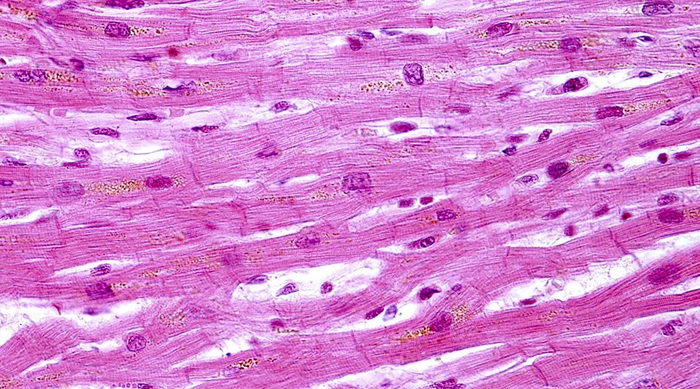
Part 3
The Pathway of Blood
Follow one drop through the right heart, the lungs, and the left heart, then meet the great vessels and the heart's own supply.
Part 3 · Blood pathway
Trace a drop of blood
Part 3 · Great vessels
The great vessels
- Superior and inferior venae cavae: return oxygen-poor blood from the upper and lower body to the right atrium.
- Pulmonary trunk: carries blood from the right ventricle to the lungs, splitting into right and left pulmonary arteries.
- Pulmonary veins (four): return oxygen-rich blood from the lungs to the left atrium.
- Aorta: the largest artery, carrying oxygen-rich blood from the left ventricle to the body.
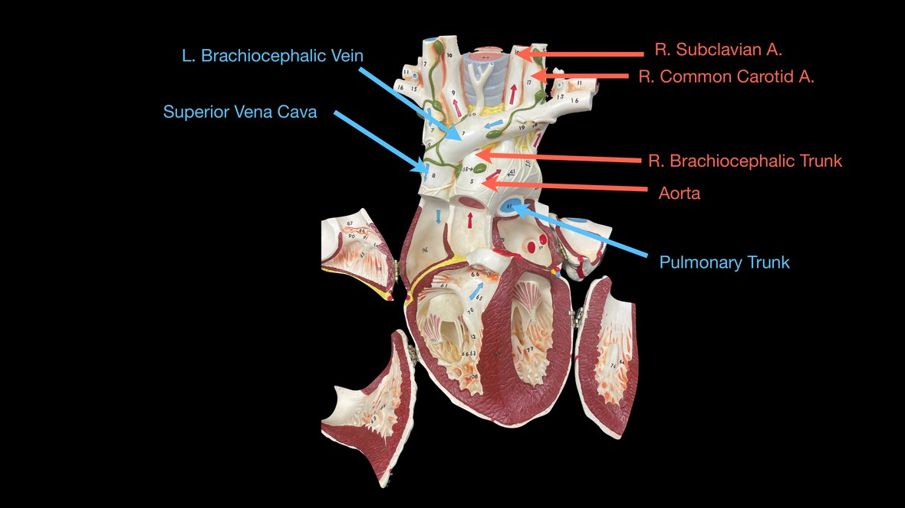
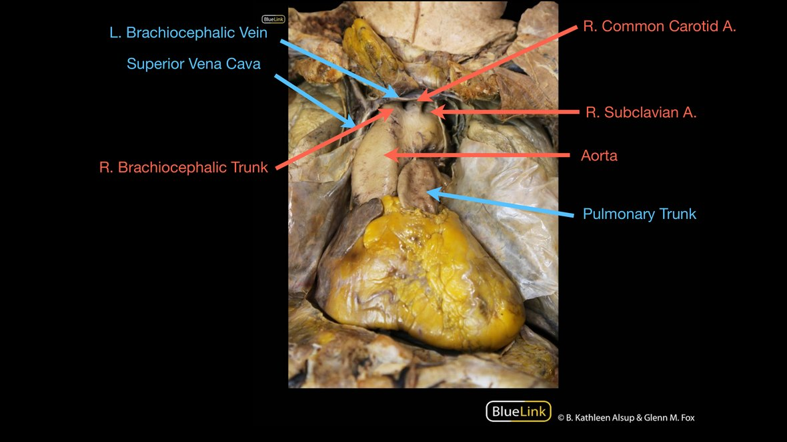
Cadaver image: University of Michigan BlueLink (B. Kathleen Alsup & Glenn M. Fox).
Part 3 · Coronary supply
The coronary circulation
The heart wall feeds itself: aorta -> coronary arteries -> myocardial capillaries -> cardiac veins -> coronary sinus -> right atrium.
| Artery | Main branches | Supplies |
|---|---|---|
| Right coronary (RCA) | Right marginal; posterior interventricular (PDA) | Right atrium and ventricle, posterior septum, and usually the SA and AV nodes |
| Left coronary (LCA) | Anterior interventricular (LAD); circumflex; left marginal | Most of the left atrium and ventricle and the anterior septum |
The cardiac veins drain into the coronary sinus on the posterior heart, which empties into the right atrium: the great cardiac vein (runs with the LAD), the middle cardiac vein (with the PDA), and the small cardiac vein (with the right marginal artery).
Part 3 · Coronary supply
Coronary veins, the coronary sinus, and anastomoses
| Cardiac vein | Runs in | Drains |
|---|---|---|
| Great cardiac vein | anterior interventricular sulcus | region supplied by the left coronary artery |
| Middle cardiac vein | posterior interventricular sulcus | region supplied by the posterior interventricular artery |
| Small cardiac vein | coronary sulcus | right atrium and right ventricle |
| Anterior cardiac veins | (open directly into the right atrium) | right ventricle |
Part 4
Check Your Understanding
From recall to reasoning, then the key takeaways.
Part 4 · Recall (DOK 1)
Name the valve
Depth of Knowledge 1 · Recall
Which valve sits between the left atrium and the left ventricle?
Answer
Mitral (bicuspid) valve. The tricuspid is on the right; the semilunar valves guard the exits to the pulmonary trunk and aorta.
Part 4 · Skill / concept (DOK 2)
Apply the structure
Depth of Knowledge 2 · Skill / concept
Why is the wall of the left ventricle the thickest of the four chambers?
Answer
It drives the systemic circuit. Pumping to the entire body takes far more force than the right ventricle's push to the nearby lungs.
Part 4 · Strategic reasoning (DOK 3)
Reason it through
Depth of Knowledge 3 · Strategic reasoning
If a papillary muscle ruptures during a heart attack, why does blood leak backward through the AV valve?
Answer
The chordae go slack. Papillary muscles tense the chordae to hold the AV cusps shut; if one fails, the valve everts and blood regurgitates into the atrium.
Wrap-up
Key takeaways
- The heart wall = epicardium, myocardium, endocardium, inside the pericardium.
- Four chambers: atria receive, ventricles pump; the left ventricle is thickest.
- Four valves: tricuspid and mitral (AV) guard the atria; pulmonary and aortic (semilunar) guard the exits; chordae and papillary muscles hold the AV valves shut.
- Cardiac muscle is striated and branched with intercalated discs (gap junctions) that make it a functional syncytium.
- Blood: RA -> tricuspid -> RV -> pulmonary valve -> lungs -> LA -> mitral -> LV -> aortic valve -> body.
- The coronary arteries feed the heart; blocking one causes a heart attack.
Acknowledgment
With thanks
A special thank you to BlueLink Anatomy, University of Michigan Medical School, for the cadaver and anatomical image materials that appear throughout this deck.
Used with appreciation for their generosity in sharing open anatomical teaching resources.
Keep studying